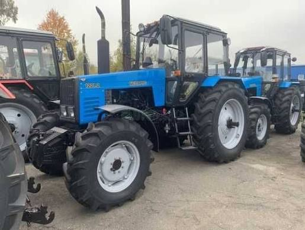
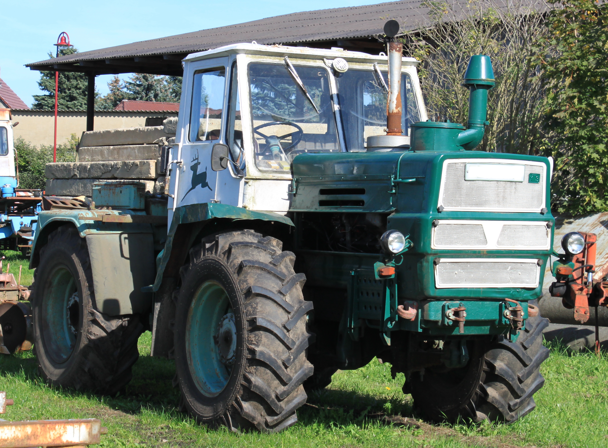
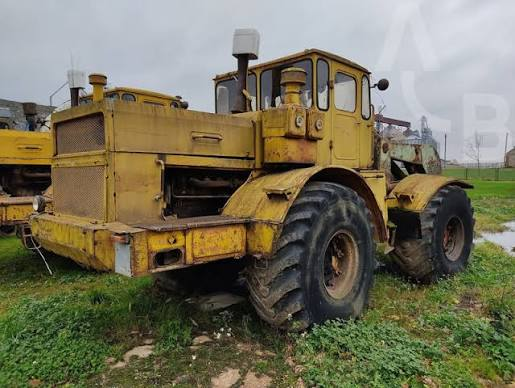
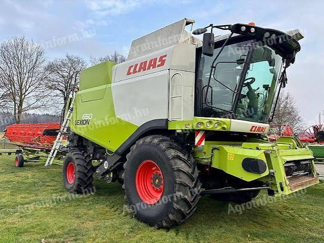
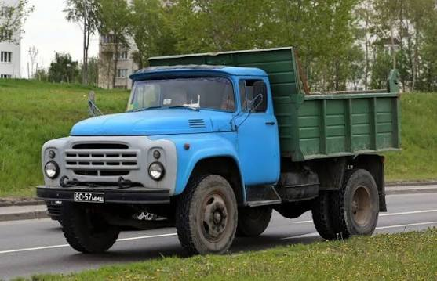
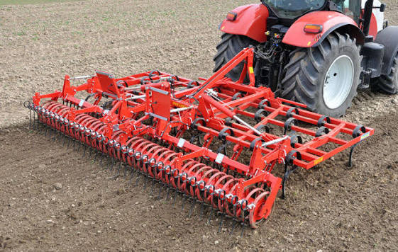
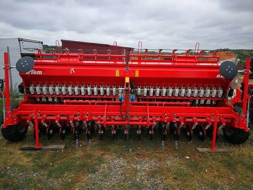
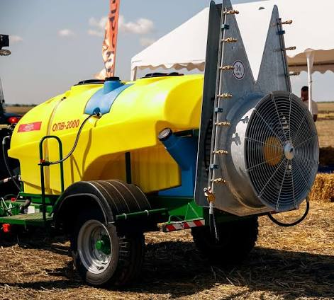

SRL POHOARNA AGRO
Agricultură de precizie și tradiție moldovenească în inima raionului Șoldănești. Cultivăm viitorul cu responsabilitate.
Explorează companiaDespre companie
Înființată la data de 7 mai 1999, SRL POHOARNA AGRO este o întreprindere agricolă de mărime medie, reprezentând un pilon economic important pentru comuna Pohoarna și raionul Șoldănești. Dispunem de propria bază tehnico-materială, ateliere mecanice pentru reparația utilajelor și spații de depozitare bine puse la punct.
Infrastructură
Deținem hambare și silozuri proprii pentru depozitarea recoltei, stații de uscare a cerealelor și un atelier mecanic dotat pentru întreținerea parcului tehnic mixt (modern și sovietic).
Resurse Umane
Asigurăm locuri de muncă stabile pentru o echipă formată din 65 - 85 de specialiști (mecanizatori cu experiență, agronomi, lăcătuși și personal logistic).
Performanță Comercială
Venituri operaționale anuale ce oscilează între 19 și 23 milioane MDL. Producția este direcționată atât pe piața internă (morărit, furaje), cât și către terminalele de export.
Parteneri Bancari
Suntem susținuți în fluxul de capital de liderii sistemului bancar național: Moldova Agroindbank SA și Moldindconbank SA.
Date și statistici operaționale
Cifrele care reflectă dimensiunea și capacitatea noastră de producție ca întreprindere agricolă medie.
0
Hectare în gestiune
0
Angajați permanenți
0
ToneCapacitate depozitare
0
MDLProfit net de referință
0
Unități tehnice motorizate
0
kg/haRandament mediu Grâu
0
LitriConsum anual combustibil
0
AniExperiență pe piață (din 1999)
Structura Culturilor Agricole
Utilizăm sisteme moderne de rotație a culturilor pentru a conserva calitatea solului de cernoziom și a maximiza productivitatea.
Grâu de toamnă
1200 ha
Cultura de bază, destinată panificației autohtone și exportului. Soiuri rezistente la ger.
Porumb
850 ha
Hibrizi performanți cu rezistență sporită la secetă, destinați sectorului zootehnic.
Floarea-soarelui
600 ha
Semințe oleaginoase bogate în ulei, principalul produs comercial cu rentabilitate înaltă.
Orz
300 ha
Utilizat în industria furajeră și a berii, recoltat timpuriu pentru a elibera terenul.
Rapiță
250 ha
Cultură tehnică profitabilă, necesită atenție sporită dar oferă venituri timpurii în sezon.
Indicatori de Eficiență Economică
| Anul | Venit din vânzări (MDL) | Profit Net / Pierderi (MDL) | Număr mediu salariați |
|---|---|---|---|
| 2024 | 23,32 Mln | +807,10 Mii | 85 persoane |
| 2025 | 19,08 Mln | -3,00 Mln | 65 persoane |
| 2026 | 22,03 Mln | -2,64 Mln | 65 persoane |
Evoluție Venituri (MDL)
Evoluție Profit Net (MDL)
Distribuția Terenului pe Culturi (%)
Structura Resurselor Umane
Parcul Tehnic și Mecanizare
Combinăm fiabilitatea utilajelor clasice sovietice cu eficiența mașinilor agricole moderne, având un parc auto complet pentru toate tipurile de lucrări agricole.

MTZ Belarus (82.1 / 1221)
„Caii de povară” ai fermei. Tractoare versatile utilizate zilnic pentru stropit, prășit, fertilizare și transport local.

Tractor T-150K
Tractor articulat clasic sovietic. Extrem de robust și puternic, folosit intensiv la arături adânci și discuiri grele.

Kirovets K-700
Gigantul câmpiilor. Unități masive de tracțiune utilizate pentru scarificare și pregătirea terenurilor extinse în timp record.

Combine CLAAS Lexion
Sisteme tehnologice moderne de recoltare de înaltă performanță, dotate cu headere adaptabile pentru cereale și prășitoare.

Autocamioane ZIL-130 / GAZ
Camioanele de încredere ale gospodăriei. Esențiale în timpul campaniei de recoltare pentru transportul cerealelor de la combină la hambar.

Pluguri și Cultivatoare
Echipamente grele pentru prelucrarea solului (pluguri reversibile, cultivatoare), vitale pentru pregătirea patului germinativ.

Semănători de Precizie
Echipamente pneumatice moderne care asigură uniformitatea însămânțării, optimizând densitatea plantelor la hectar.

Echipamente de Stropit
Stropitori tractate și autopropulsate cu brațe largi, destinate aplicării tratamentelor fitosanitare și erbicidării la timp.
Conducere și Fondatori
Strelciuc Gheorghe
Director General
Responsabil de managementul strategic, deciziile financiare și coordonarea zilnică a campaniilor agricole.
Lupu Minodora
Fondator Co-Asociat
Implicată în supervizarea patrimonială și deciziile adunării generale a asociaților fermei.
Gonța Ana
Fondator Co-Asociat
Oferă suport în administrarea structurală și păstrarea tradiției parteneriatelor cu arendașii locali.
Tîltu Mina
Fondator Co-Asociat
Contribuție istorică și decizională în consolidarea terenurilor agricole ale companiei încă de la înființare.
Contacte și Localizare
Sediul Central SRL
Satul Pohoarna, raionul Șoldănești, Republica Moldova
+373 272 47 300
(Administrație)
+373 272 47 280
(Contabilitate)
Ultimul Control ISM: 2025
Auditul Fiscal Complet: 2026